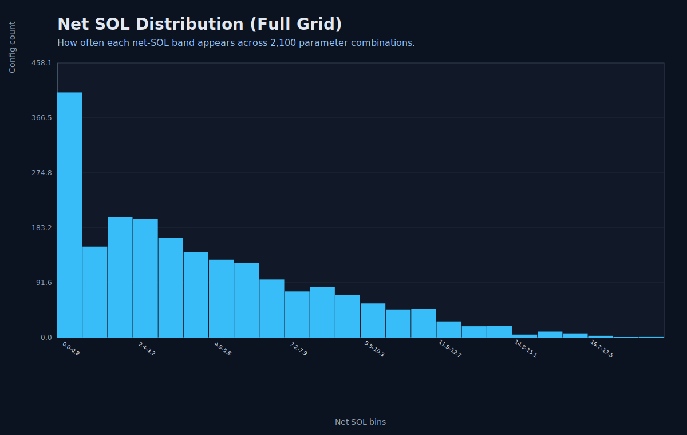
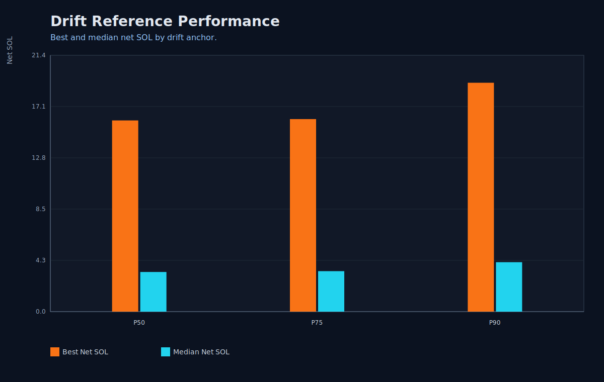
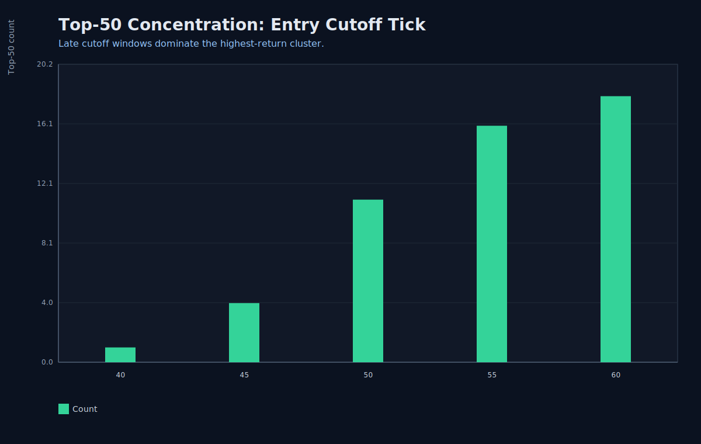
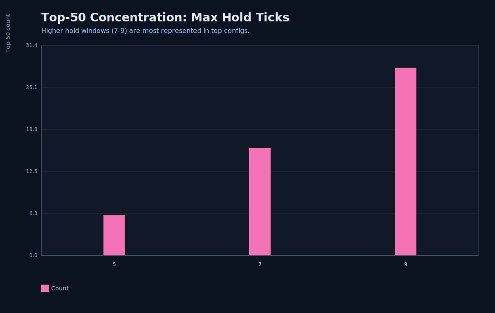

Scalping Outcomes Visual Report
PnL Envelope Percentiles
Fast read of downside/median/upside bounds in SOL.

Net SOL Distribution
Shows how much of the grid is high-return, low-return, or dead-zone.
Playbook Mode Performance
Compares best vs typical outcomes for each entry logic family.

Drift Reference Performance
Compares P50/P75/P90 anchors under same grid.
Top-50: Classification Window
Where high performers concentrate by baseline ticks.

Top-50: Entry Cutoff
Where high performers concentrate by allowed entry horizon.
Top-50: Max Hold
Where high performers concentrate by hold duration.
Heatmap: Classification x Cutoff
Averaged surface to spot broad plateaus before rigid thresholds.